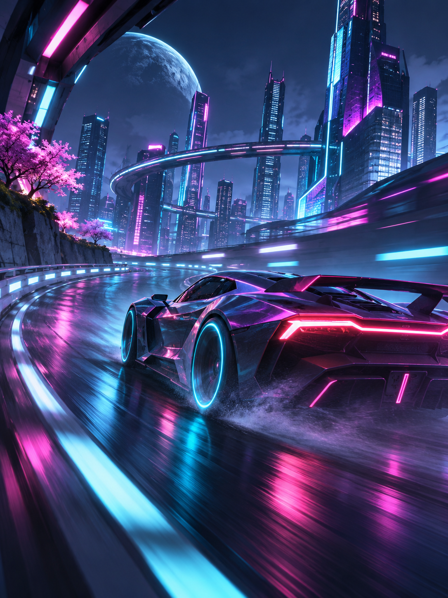

Neon Circuit

Побеждайте на ночных трассах футуристического города.
Об игре
2089 год. Ночной город превратился в гоночную трассу, а победа в лиге Neon Circuit — единственный способ попасть в верхний город. Собери машину своей мечты, изучи каждый тоннель и обгони тех, кто уже считает себя чемпионом.
Разработчик: Prism Drive. Год выхода: 2025. Жанр: гонки.
Особенности
- 24 трассы в трёх районах города
- Сетевые заезды до 8 игроков
- Тюнинг машины: от двигателя до цвета неоновой подсветки
- Режим «Призрак»: соревнуйся с собственным лучшим заездом
Как начать
- Выбери стартовую машину в гараже.
- Пройди обучающий заезд по набережной.
- Получи пропуск в первую лигу и сразись с соперниками.
Цена
1499 ₽
599 ₽
−60%
Системные требования
| Параметр | Минимальные | Рекомендуемые |
|---|---|---|
| ОС | Windows 10 64-bit | Windows 11 64-bit |
| Процессор | 4 ядра, 3.0 ГГц | 8 ядер, 3.6 ГГц |
| Оперативная память | 8 ГБ | 16 ГБ |
| Видеокарта | 4 ГБ видеопамяти | 8 ГБ видеопамяти |
| Место на диске | 35 ГБ | |